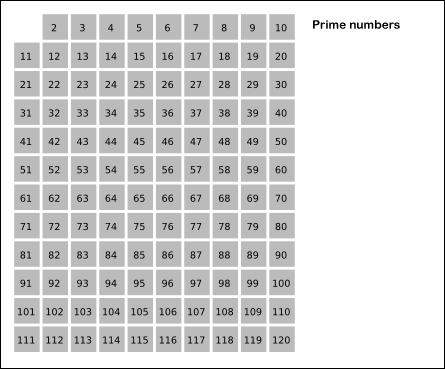

Python Data Types#
Now that we have some of the basics down, let’s dive into some of Python’s built-in data types. These data types provide a powerful and easy-to-use way of organizing and structuring data. The four most commonly used data types are list (lists), tuple (tuples), set (sets), dict (dictionaries). In this section, we will discuss the list and tuple types, which are used for organizing sequential data.
Lists#
In Python, a list is a versatile and fundamental data type used to store an sequence of items. Lists are mutable, which means they can be modified after they are created. Each item within a list is called an element, and the elements can be of any data type, such as integers, strings, or even other lists. To create a list, we use a comma separated sequence of values surrounded by square brackets ([…]). For example:
# Lists can store a sequence of values:
elements = [ 'H', 'He', 'Li', 'Be' ]
numbers = [ 0.0, 0.2, 0.4, 0.8, 1.0 ]
# Lists can also store different types:
x = 3.14159
stuff = [ 0, 1.2, 'string', x, 1+2j ]
# lists are a data type in Python:
print(type(stuff))
# we can view the contents of a list by printing it:
print(stuff)
<class 'list'>
[0, 1.2, 'string', 3.14159, (1+2j)]
We can construct a list using the square bracket notation, or by converting any sequence (i.e. anything we can iterate over with a for loop) to a list using the list function. For example, to construct a list of consecutive integers from 0 to \(n-1\), we could use list(range(n)). Below, we give some examples of constructing various lists:
# initialize some examples of lists:
list_1 = [0, 1, 2, 3]
list_2 = list(range(6))
empty_list = []
another_empty_list = list()
# print out the lists:
print(list_1)
print(list_2)
print(empty_list)
print(another_empty_list)
[0, 1, 2, 3]
[0, 1, 2, 3, 4, 5]
[]
[]
Tuples#
The tuple data type is similar in function to the list type. Tuples can also be used for storing sequential data, and can be constructed by enclosing a sequence of comma separated values by parentheses ((…)). Tuples can also be created by a comma separated list without enclosing parentheses, though this syntax is not used very often. Unlike lists, tuples are immutable data types, which means that they cannot be modified after they are created. We will explain more about what this means later.
Here are some examples of tuples:
tuple_1 = (0, 1, 2, 3)
tuple_2 = 4, 5, 6, 7
tuple_3 = tuple(range(10,15))
single_value_tuple = (1.234,)
empty_tuple = ()
another_empty_tuple = tuple()
print(tuple_1)
print(tuple_2)
print(tuple_3)
print(single_value_tuple)
print(empty_tuple)
print(another_empty_tuple)
(0, 1, 2, 3)
(4, 5, 6, 7)
(10, 11, 12, 13, 14)
(1.234,)
()
()
Note
Single-value tuples must have a comma after the first value. This avoids any Python language ambiguities between an expression placed in parentheses (i.e. (1+1), which evaluates to the int value 2) and a single-value tuple created from the result of an expression (i.e. (1+1,) evaluates to the tuple data type (2,)).
Indexing and Slicing:#
We can access elements at a specific index in a tuple or list using indexing. Recall that in Python, the index starts at 0 for the first element and increments by 1 for each subsequent element. To access the \(n\)th element, we use the name of the list or tuple followed by square brackets [] with the index inside to access a specific element. For example, my_list[0] accesses the first element in my_list. Note that the index accessed must be less than the length of the list, otherwise it will result in an error.
In addition to positive indexing, Python supports negative indices, which allows you to access elements starting at the end of the list. For example, my_list[-1] accesses the last element, my_list[-2] accesses the second-to-last, and so on. Here are some examples of list indexing:
# initialize list and tuple examples:
list_1 = [ 0, 1, 2, 3, 4 ]
tuple_1 = (10, 11, 12, 13, 14)
# access tuples and lists:
print('Accessing Lists & Tuples by index:')
print(list_1[0], list_1[1], list_1[2], list_1[-1])
print(tuple_1[0], tuple_1[1], tuple_1[2], tuple_1[-1])
Accessing Lists & Tuples by index:
0 1 2 4
10 11 12 14
Slicing is an operation that allows you to extract a portion of a list or tuple by specifying an (optional) start index and and (optional) end index. To extract elements \(a, a+1, ..., b-2, b-1\), we use the syntax my_list[a:b]. Note that the end index is not included in the slice (similar to how Python’s range(a,b) does not include b). Here are some examples of list and tuple slicing:
# initialize list and tuple examples:
list_1 = [ 0, 1, 2, 3, 4 ]
tuple_1 = (10, 11, 12, 13, 14)
# access list by slicing:
print('Accessing Lists by slicing:')
print(list_1[1:4])
print(list_1[:2])
print(list_1[2:])
print(list_1[:-2])
# access tuple by slicing:
print('Accessing Tuples by slicing:')
print(tuple_1[1:4])
print(tuple_1[:2])
print(tuple_1[2:])
print(tuple_1[:-2])
Accessing Lists by slicing:
[1, 2, 3]
[0, 1]
[2, 3, 4]
[0, 1, 2]
Accessing Tuples by slicing:
(11, 12, 13)
(10, 11)
(12, 13, 14)
(10, 11, 12)
As mentioned earlier, lists and tuples can contain other lists and tuples. This is useful for constructing matrix-like data structures, or lists of coordinate pairs:
# create a matrix-like list:
identity = [
[ 1, 0, 0],
[ 0, 1, 0],
[ 0, 0, 1]
]
# print entries of the matrix:
print(identity[0][2])
print(identity[1][1])
# create a list of coordinate pairs:
coordinates = [ (1,2), (3,4), (5,6) ]
# print last coordinate values:
print(coordinates[-1][0], coordinates[-1][1])
0
1
5 6
Unfortunately, Python does not have built-in matrix operations like addition, matrix multiplication, etc., although this functionality can be found in the numpy package, which we will cover later.
List and Tuple operations#
So far, the list and tuple types may seem to have essentially the same functionality. When we introduced these data types, we mentioned that the key difference was that lists are mutable data types, whereas tuples are immutable. This means that the values of lists can be modified, but the values of tuples cannot be modified.
We can modify a specific element in a list using list indexing combined with the assignment operator =:
# initialize list:
my_list = [ 1, 2, 3, 4]
# print list before modification
print(my_list)
# modify the second element:
my_list[1] = 200
# print list after modification:
print(my_list)
[1, 2, 3, 4]
[1, 200, 3, 4]
In addition to modifying individual values, you can also append and remove values at the end of the list using the list.append and list.pop functions respectively. These functions are commonly used when sequentially building or destroying lists inside a for loop:
# create an empty list:
my_list = []
# gradually add elements to the end of the list:
for i in range(6):
my_list.append(i)
print(my_list)
# remove some elements from the end of the list:
for i in range(3):
my_list.pop()
print(my_list)
[0]
[0, 1]
[0, 1, 2]
[0, 1, 2, 3]
[0, 1, 2, 3, 4]
[0, 1, 2, 3, 4, 5]
[0, 1, 2, 3, 4]
[0, 1, 2, 3]
[0, 1, 2]
See also
To learn more about other functions associated with the list and tuple data types, see the Official Python Documentaion.
Note that updating elements, appending elements, and popping elements from a tuple is forbidden, since tuples are immutable. However, one key feature of tuples is that they are comparable. Tuple comparison works by first comparing the elements at index 0. If equality holds, the elements at index 1 are compared, and so on:
name_1 = ('Isaac', 'Asimov')
name_2 = ('Isaac', 'Newton')
name_3 = ('Johannes', 'Kepler')
print(name_1 == name_2)
print(name_1 < name_2)
print(name_1 >= name_3)
False
True
False
Tuples and lists also have some interesting behaviors with the + and * operators. The + operator concatenates two lists (i.e. appends two lists/tuples to create a new list/tuple. The * operator, when used with an integer \(n\) and a tuple/list will construct a new list/tuple that consists of \(n\) consecutive copies of the tuple/list. Finally, len is an important function that returns the length of a list or tuple. Examples of these functions are shown below:
list_a = [1, 2, 3, 4]
list_b = [11, 12, 13]
tuple_a = (1, 2, 3, 4)
tuple_b = (11, 12, 13)
print('List operations:')
print(list_a + list_b)
print(list_b * 3)
print(len(list_a))
print('Tuple Operations:')
print(tuple_a + tuple_b)
print(tuple_b * 3)
print(len(tuple_a))
List operations:
[1, 2, 3, 4, 11, 12, 13]
[11, 12, 13, 11, 12, 13, 11, 12, 13]
4
Tuple Operations:
(1, 2, 3, 4, 11, 12, 13)
(11, 12, 13, 11, 12, 13, 11, 12, 13)
4
Python List Comprehension#
Python list comprehension is a concise and powerful way to create new lists based on existing lists or other iterable objects. It allows you to combine the process of creating a new list and applying transformations or filtering in a single line of code. List comprehension is perhaps one of the most highly regarded features in Python, since it allows for the processing of sequential data in a way that is both concise and efficient. The general syntax for list comprehension in Python is as follows:
new_list = [ expression for item in sequence if condition ]
The
expressionrepresents the transformation or operation to be applied to eachitemin thesequence.The
itemrepresents an element in thesequence, where thesequenceis a list, tuple, range, etc.The optional
conditionspecifies a filtering condition, allowing you to include only the items that satisfy the condition.
List comprehension is often used to create a new list by applying an expression to each element of an iterable object (such as another list). For example:
# create a list of numbers:
numbers = [1, 2, 3, 4, 5]
# transform this list into a list of squares:
squared_numbers = [ x**2 for x in numbers ]
print(squared_numbers)
[1, 4, 9, 16, 25]
In this example, a new list named squared_numbers is created by squaring each element in the numbers list using the expression x**2 within the list comprehension.
List comprehension allows you to apply various transformations or operations to each element in the iterable. For instance:
# create a list of names:
names = ['Newton', 'Einstein', 'Feynman', 'Witten']
# transform names to a list of name lengths:
name_lengths = [ len(name) for name in names ]
print(name_lengths)
[6, 8, 7, 6]
In this example, the len function is applied to each element in the names list to obtain the number of characters in each name via list comprehension. List comprehension also supports the use of conditional statements to filter the elements that are included in the new list. For example:
# create a list of numbers:
numbers = [0, -1, 2, 3, -4, 5]
# filter numbers into a list of only positive numbers:
positive_numbers = [ x for x in numbers if x > 0 ]
print(positive_numbers)
[2, 3, 5]
In this example, only the positive numbers from the numbers list are included in the positive_numbers list by using the conditional statement x > 0.
Exercises#
Exercise 1: Sieve of Eratosthenes
The Sieve of Eratosthenes is one of the oldest known algorithms for finding prime numbers. Starting with a set of small prime numbers less than \(N\), the algorithm can find all prime numbers up to \(N^2\) using the following procedure:
Start with a set of all prime numbers less than \(N\) (e.g. \(2,3,5,\) and \(7\) for \(N = 10\)).
Create a large list of numbers from 2 to \(N^2 + 2N\) (e.g. 2,3,4,5,…,120).
For each prime \(p < N\), cross off all multiples of \(p\) in the large list, starting with \(2p\), then \(3p\), \(4p\), and so on.
The remaining numbers from 2 to \(N^2\) that have not been crossed off are primes.
Here is an animation of this process for the numbers up to \(120\) (credit: Wikipedia):

Write some Python code that uses the Sieve of Eratosthenes to find all prime numbers up to 120 starting with the primes \(2\),\(3\),\(5\), and \(7\). Print out the final list of primes.
Hint: To represent the list of numbers up to 120, use a Python list, which you can create as follows:
number_list = list(range(121))
To “cross off” a number from the list, you can set the corresponding number in the list to \(0\) as follows:
number_list[n] = 0
This will set the number at the \(n\)th index (which should be \(n\)) to be \(0\). Once all non-prime numbers have been “crossed off”, you can filter out the remaining values using list comprehension.
Solutions#
Exercise 1: Sieve of Eratosthenes#
Show code cell content
# Starting list of primes less than N = 10:
small_primes = [2,3,5,7]
# generate number list:
number_list = list(range(121))
# cross off multiples of each prime:
for p in small_primes:
n = 2*p
while n <= 120:
number_list[n] = 0
n += p
# filter down to all numbers that are not crossed out (not 0 or 1):
primes = [ n for n in number_list if n > 1 ]
# print result:
print(primes)
[2, 3, 5, 7, 11, 13, 17, 19, 23, 29, 31, 37, 41, 43, 47, 53, 59, 61, 67, 71, 73, 79, 83, 89, 97, 101, 103, 107, 109, 113]